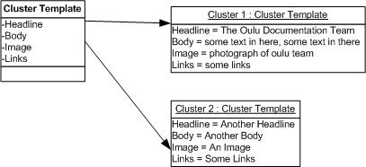
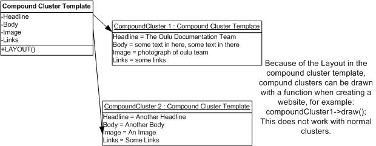

Glossary
a feature used for creating and managing user profiles within N/X
editing area within N/X
feature used for for displaying content of channels. One can select channel, category, sortmode and article count.
Topic categories defining the contents of pages created by N/X. i.e. News, Persons
An aggregation of contents specified by the cluster template.  The content is filled in by an editor.
A form that enables you to create structure for your site and define the type of contents. Afterwards, it can be used for creating page-templates. Cluster template has no layout of its own. 
A form that enables you to create structure for your site and define the type of contents. Afterwards, it can be used for creating page-templates. A compound cluster template has a layout of its own.
group of compound clusters. To be used for creating teasers, banners with rotation and so on.
Elements on the web page that can be altered. The only input-fields that will be shown when creating a cluster or a webpage are of dynamic content. Static content will not be displayed there as it is the same for all clusters.
an instance of dynamic content, such as a sub menu
unpublish a page.
This feature is used for exchanging clusters, cluster-templates and page-templates between your N/X installation and others. It generates an XML File, which you can store on your local hard drive and exchange with other N/X-Users.
This feature is used for importing data, which has formerly been exported with another N/X installation, to your N/X.
publish a page.
a collection of all content material on the site
a site/page that is online.
list of options, usually located on top of a page, that helps the user to navigate the site. This list always remains the same throughout the entire site.(add image)
data about data on the site created by N/X. A description and keywords are filled in for each page on the site in order to help the user to locate them better.
In N/X, a meta template is used for defining which metadata fields need to go on a new page. When you create a new metadata field in the template, each new page based on that template will contain that field.
A sitepage that has any number of webpages. Multipages can be used for creating news as one can create a new webpage on the fly.
A html-code within logic or placeholders, where the content is to be filled in.
Hypertext Preprocessor, an open-source, server-side, HTML embedded scripting language used to create dynamic web pages/prehypertextprocessor (Courtesy of www.webopedia.com)
Plug-ins allow you to enhance N/X beyond its standard features. Typically, plug-ins are used to create new objects types in addition to the two standard object types text and image.
You can also develop plug-ins yourself to create more functionality. You could, for example, write a plug-in that grabs content form another site, generates images dynamically, or connects to another database you have stored product data in. For more information on developing plug-ins, see N/X API documentation. For ready-made plug-ins, see N/X on Sourceforge.
location of an object on the site. In the case of cluster templates, the location is indicated as a numbered order from 1-999. Whereas the location of pages is indicated as a position on the site map. When creating a new page, you need to indicate a position on the site map where you want to place the new page.
delete unnecessary information from the database
feature of N/X that enables you to make copies of a section on your web page and reuse it with or without the old content
N/X 2004 comes with an integrated search engine which is based on a dictionary where words are looked up. The dictionary is build automatically by a robot (a so-called spider) who is visiting the homepage and looking for key words. Whenever search is not up to date, one has to run the spider.
Layout graphics on the web page created by a developer, for example the main menu. When you are editing a page that is based on a particular template, the static content elements will always remain the same.
an instance of static content, such as a main menu
list of options that helps you to navigate the site. Unlike a main menu, it is automatically generated depending on which section of the website the user has loaded (add image)
feature used for synchronizing clusters after having modified a cluster template
In spreadsheet and database applications, a template is a blank form that shows which fields exist, their locations, and their length. In N/X, templates are the basis of every output. A template is a form in which all the cells have been defined but no data has yet been entered.
A hierarchical structure within a webpage created by N/X.
Previous: Publishing